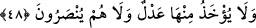

hatırlamalarını istemiştir.
Âyetin “Ben sizi âlemlere üstün kıldım” bölümü, “Size nimetler verdim” kısmına
atıftır. Bu atıf “hâss”ın “âmm”a atfıdır. Burada bir onurlandırma söz konusudur. Allah
Teâlâ, onların babalarına ve atalarına ilim, îmân ve iyi ameller nasîb etmiştir. Onlardan
nebîler ve adâletli krallar çıkarmış, bu sûretle onları kendi zamanlarındaki âlemlere
üstün kılmıştır. Yahûdîlerin bu durumu, Mûsâ (a.s.) zamânındaki atalarının durumudur.
Bu hâl yahûdîler kendi hallerini değiştirinceye kadar devam etmiştir. Aynı şekilde Hz.
Meryem hakkında: “Ve seni bütün dünyâ kadınlarına tercih etti” (Al-i İmrân, 3/42)
âyeti de; ben seni yaşadığın çağdaki kadınlara üstün kıldım, demektir. Zira Hz. Hatîce,
Âişe ve Fâtıma, Meryem’den üstündürler. “Siz insanlar için çıkarılmış hayırlı bir
ümmetsiniz” (Al-i İmrân, 3/110) âyetinden de anlaşılacağı gibi, Muhammed ümmeti
diğer ümmetlerden üstündür. Yahûdîlerin müslümanlardan daha üstün olmaları
sözkonusu değildir. Âyette geçen “âlemler” lâfzı, hakiki mânâda değil, örfî mânâdadır.
Denilmiştir ki ehl-i kitaptan Muhammed’e (s.a.) îmân eden müslümanlar hem kendi
nebîlerine, hem de son peygambere tâbi olduklarından dolayı diğer müslümanlardan bir
derece üstündür. Çünkü onlar, kendi peygamberlerine ve daha sonra gelen
peygamberlere tâbi olmakla iki ecir birden almışlardır. Rasûlullah (s.a.)’den şu hadis
rivâyet edilmiştir. “Üç grup insan vardır ki Allah onlara çifte ecir verir. Birincisi; bir
câriye alıp, onu güzelce terbiye eden, sonra da âzâd edip onunla evlenen kimse.
İkincisi; efendisine ve Allah’a itâat eden köle. Üçüncüsü de ehl-i kitaptan Nebî
(a.s.)’a erişip O’na îmân eden kimsedir.”[266]
Kuşeyrî der ki: “Allah Teâlâ, “Ben sizi âlemlere üstün tuttum.” lâfzıyla
İsrâîloğulları’na kendilerini üstün kıldığına şâhid tutmuştur. Peygamberimiz’e ise: “De
ki; ancak Allah’ın lütfu ve rahmetiyle” (Yûnus, 10/58) buyurarak kendisinin fazlına
peygamberini şâhid tutmuştur. Üstünlüğünü kendisinden gören ile Rabbinden gören
arasında ne kadar büyük bir fark vardır! Zira birincisi insanı ucbe götürürken ikincisi
Rabbinin emirlerine uymayı sağlar. Nitekim: Yahûdîler; Allah’ın dostu İbrâhîm ile O’na
kurban edilen İshâk (a.s.)’ın torunları olduklarını ve bu iki peygamberin kendilerine
şefâat edeceklerini, Allah’ın da onların şefâatlerini kabûl edeceklerini söylüyorlardı.
Allah Teâlâ, onların iddiâlarına cevâben şu âyeti indirdi:
48. Öyle bir günden korkun ki, o günde hiç kimse başkası için herhangi bir
ödemede bulunamaz; hiç kimseden (Allah izin vermedikçe) şefâat kabûl olunmaz,
fidye alınmaz; onlara asla yardım da yapılmaz.
Ey İsrâîloğulları; gelişi kesin olan kıyâmet; yâni hesap, azâb ve kıyâmet gününden